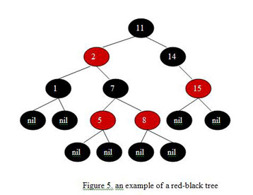

Member Count: 316,431 -
October 24, 2011
[Get Time]


 
|

As a programmer, you'll frequently come across tasks that deal with a number of objects -- numbers, strings, people, and so forth -- and that require you to store and process those objects. If you need to maintain a list of objects that are sorted and unique, and if you need to be able to quickly insert and retrieve objects to and from this list, the ideal data structure will be a tree set (or a tree map, if you consider each object a key and associate another object called a value to it). Many programming languages provide built-in support for tree-based sets and maps -- for instance, Java's TreeSet/TreeMap classes and the C++ Standard Template Library's set and map classes -- but because of their common use, it's easy to misunderstand what actually happens behind the scenes, and how the underlying data structures actually work. That’s what this article is all about. We'll start off by looking at some of the general terms and concepts used in dealing with trees We'll then focus on binary search trees (BST), a special type of tree that keeps elements sorted (but doesn’t guarantee efficient insertion and retrieval). Finally we'll look at red-black trees, a variation of binary search trees that overcome BST's limitations through a logarithmic bound on insertion and retrieval. Trees terminology A tree is a data structure that represents data in a hierarchical manner. It associates every object to a node in the tree and maintains the parent/child relationships between those nodes. Each tree must have exactly one node, called the root, from which all nodes of the tree extend (and which has no parent of its own). The other end of the tree – the last level down -- contains the leaf nodes of the tree. The number of lines you pass through when you travel from the root until you reach a particular node is the depth of that node in the tree (node G in the figure above has a depth of 2). The height of the tree is the maximum depth of any node in the tree (the tree in Figure 1 has a height of 3). The number of children emanating from a given node is referred to as its degree -- for example, node A above has a degree of 3 and node H has a degree of 1. Binary Search Tree (BST) A binary search tree is a tree with one additional constraint -- it keeps the elements in the tree in a particular order. Formally each node in the BST has two children (if any are missing we consider it a nil node), a left child and a right child. Nodes are rooted in place based on their values, with the smallest on the left and largest on the right. Traversing BST A common requirement when using sets and maps is to go through the elements in order. With binary search trees, traversing from left to right is known as inordertree traversal. In a tree where each node has a value and two pointers to the left and right children, inorder tree traversal can be thought of as: Procedure Inorder_traversal(Node n)
if(n == nil)
return;
Inorder_traversal(n.left_subtree);
Print(n.value);
Inorder_traversal(n.right_subtree);
…
Inorder_traversal(root);
Operations on BST (insertion, deletion and retrieval) BST insertion: For example, consider we want to add a new node with value 4 to the BST in Figure 1. Here are the steps we will go through:
BST Deletion:
Figure 4 shows these three cases in action. BST Retrieval: Any of these primitive operations on BST run in O(h) time, where h is the tree height, so the smaller the tree height the better running time operations will achieve. The problem with BST is that, depending on the order of inserting elements in the tree, the tree shape can vary. In the worst cases (such as inserting elements in order) the tree will look like a linked list in which each node has only a right child. This yields O(n) for primitive operations on the BST, with n the number of nodes in the tree. To solve this problem many variations of binary search trees exist. Of these variations, red-black trees provide a well-balanced BST that guarantees a logarithmic bound on primitive operations. Red-black Trees Red-black trees are an evolution of binary search trees that aim to keep the tree balanced without affecting the complexity of the primitive operations. This is done by coloring each node in the tree with either red or black and preserving a set of properties that guarantee that the deepest path in the tree is not longer than twice the shortest one. A red-black tree is a binary search tree with the following properties:
Figure 5 shows an example of a red-black tree. 
Using these properties, we can show in two steps that a red-black tree which contains n nodes has a height of O(log n), thus all primitive operations on the tree will be of O(log n) since their order is a function of tree height.
For any non-leaf node v (height > 0) we can see that the black height of any of its two children is at least equal to bh(v)-1 -- if the child is black, that is, otherwise it is equal to bh(v) . By applying the hypothesis above we conclude that each child has at least 2^[bh(v)-1]-1 internal nodes, accordingly node v has at least By applying the lemma to the root node (with bh of at least h/2, as shown above) we get Rotations How does inserting or deleting nodes affect a red-black tree? To ensure that its color scheme and properties don't get thrown off, red-black trees employ a key operation known as rotation. Rotation is a binary operation, between a parent node and one of its children, that swaps nodes and modifys their pointers while preserving the inorder traversal of the tree (so that elements are still sorted). There are two types of rotations: left rotation and right rotation. Left rotation swaps the parent node with its right child, while right rotation swaps the parent node with its left child. Here are the steps involved in for left rotation (for right rotations just change "left" to "right" below):
 Operations on red-black tree (insertion, deletion and retrieval) Red-black tree operations are a modified version of BST operations, with the modifications aiming to preserve the properties of red-black trees while keeping the operations complexity a function of tree height. Red-black tree insertion:
Accordingly the total running time of the insertion process is O(log n). Figure 7 shows the red-black tree in figure 5 before and after insertion of a node with value 4. You can see how the swap operations modified the tree structure to keep it balanced. Red-black tree deletion: Red-black tree retrieval: Conclusion Although you may never need to implement your own set or map classes, thanks to their common built-in support, understanding how these data structures work should help you better assess the performance of your applications and give you more insight into what structure is right for a given task. For more practice with these concepts, check out these problems from the TopCoder archive that involve trees:
References
|
|
|
Home |
About TopCoder |
Press Room |
Contact Us |
Careers |
Privacy |
Terms
Competitions | Cockpit |
| Copyright TopCoder, Inc. 2001-2011 |